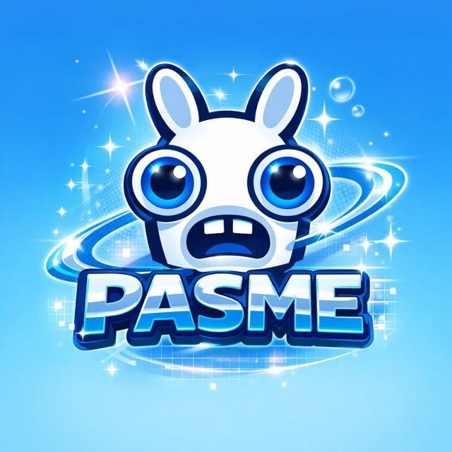

Gestão de redes sociais
Planejamento, calendário, publicação e acompanhamento para uma presença consistente.
↗
P.A.S.M.ETransformo ideias em presença digital marcante, com estratégia, personalidade e conteúdo pensado para criar conexão de verdade.
A P.A.S.M.E nasce para tirar marcas do automático. Cada projeto une olhar criativo, intenção estratégica e uma comunicação com voz própria.
Do planejamento à publicação, o objetivo é simples: fazer seu público parar, sentir e lembrar.
Soluções sob medida para transformar sua comunicação em uma experiência de marca.
Planejamento, calendário, publicação e acompanhamento para uma presença consistente.
↗Posts, carrosséis, reels e stories com uma direção visual que traduz a sua essência.
↗Logotipo, paleta, tipografia e aplicações — do perfil no Instagram ao cartão de visitas, uniforme e frota.
↗Identidades visuais e conteúdo criados para marcas reais — do logotipo à aplicação no dia a dia.
Cada etapa existe para transformar objetivos em uma comunicação coerente, bonita e viva.
Entendo sua marca, seu momento e onde você quer chegar.
Defino caminhos, linguagem, pilares e oportunidades.
Transformo o plano em conteúdo com personalidade.
Acompanho, aprendo e ajusto para a marca seguir crescendo.
Conte sobre o seu projeto e descubra como a P.A.S.M.E pode transformar sua presença digital.
Quero começar um projeto ↗